<!DOCTYPE html>
<html lang="zh-CN">
<head>
  <meta charset="UTF-8">
  <meta name="viewport" content="width=device-width, initial-scale=1.0">
  <title>10.如何从文献里找到其使用的GWAS数据？ · 孟德尔随机化修炼手册</title>
  <meta name="description" content="详细例子1：从文献Causal link between thyroid function and schizophrenia: a two-sample Mendelian randomization study查找使用的数据库资源如何找到上文中使用到的甲状腺功能的GWAS数据？​1.查看文章中…">
  <link rel="stylesheet" href="../assets/site.css">
</head>
<body>
  <div class="wrap">
    <header class="hero">
  <div class="eyebrow">正文页</div>
  <div class="breadcrumbs">
    <a href="../index.html">手册首页</a>
    <span>/</span>
    <span>数据准备与处理</span>
  </div>
  <h1 class="page-title">10.如何从文献里找到其使用的GWAS数据？</h1>
  <div class="article-meta">
    <span>所属章节：数据准备与处理</span>
    <span>字数：1257</span>
    <span>代码块：0</span>
    <span>更新时间：2023-08-30</span>
  </div>
</header>
    <div class="layout">
      <aside class="panel">
  <h2>本节目录</h2>
  <p class="sidebar-note">当前页面所在章节会完整展开，方便继续顺着手册读下去。下面的搜索只过滤这一节的条目。</p>
  <input class="search" type="search" placeholder="筛选本节条目..." data-search-input data-search-target=".filter-item">
  <div class="mini-card" style="margin-top:14px;">
    <h3>数据准备与处理</h3>
    <ul class="section-nav"><li class="filter-item" data-search-text="针对IEU在线数据服务的问题的全方位解决方案">
  <a href="nvtcexkgrhs5tvv8.html">针对IEU在线数据服务的问题的全方位解决方案</a>
</li><li class="filter-item" data-search-text="00.OpenGWAS项目Token申请流程">
  <a href="gxocspnfe6s6glbw.html">00.OpenGWAS项目Token申请流程</a>
</li><li class="filter-item" data-search-text="紧急！IEU升级账号等级登记！">
  <a href="mh8g24itfeepx9qz.html">紧急！IEU升级账号等级登记！</a>
</li><li class="filter-item" data-search-text="0. 必看！常见GWAS数据来源汇总目录">
  <a href="oipyh10uyxzuovce.html">0. 必看！常见GWAS数据来源汇总目录</a>
</li><li class="filter-item" data-search-text="1.GWAS Catalog">
  <a href="rst7w7hcm4kti3mg.html">1.GWAS Catalog</a>
</li><li class="filter-item" data-search-text="2.UKB 2018Round2英国生物银行的汇总数据集">
  <a href="fso9suo1zwkk9w0e.html">2.UKB 2018Round2英国生物银行的汇总数据集</a>
</li><li class="filter-item" data-search-text="3.ieu--opengwas--mrbase收录的在线数据">
  <a href="bd6kgzqs7bxvek9g.html">3.ieu--opengwas--mrbase收录的在线数据</a>
</li><li class="filter-item" data-search-text="4.芬兰数据库超详细介绍以及重叠率计算">
  <a href="akuhdb5c4lb6s6a1.html">4.芬兰数据库超详细介绍以及重叠率计算</a>
</li><li class="filter-item" data-search-text="光速获取芬兰R12数据库!">
  <a href="ltxzn4udtlge3rxi.html">光速获取芬兰R12数据库!</a>
</li><li class="filter-item" data-search-text="光速获取芬兰R11数据库!">
  <a href="qrbnfh8t1bgl21md.html">光速获取芬兰R11数据库!</a>
</li><li class="filter-item" data-search-text="光速获取芬兰R10数据库!">
  <a href="tr0t1gs7bdtxivcq.html">光速获取芬兰R10数据库!</a>
</li><li class="filter-item" data-search-text="5.MiBioGen肠道菌群">
  <a href="vqowppo1w81fowab.html">5.MiBioGen肠道菌群</a>
</li><li class="filter-item" data-search-text="6.UKB的35个血尿标志物">
  <a href="stqshobilao148i9.html">6.UKB的35个血尿标志物</a>
</li><li class="filter-item" data-search-text="7.The Within Family Consortium">
  <a href="gwotcny75txn86r5.html">7.The Within Family Consortium</a>
</li><li class="filter-item" data-search-text="8.血细胞联盟">
  <a href="ltbg5duhfioika16.html">8.血细胞联盟</a>
</li><li class="filter-item" data-search-text="9.Stroke数据库">
  <a href="iyxbwll1zf1zv6sz.html">9.Stroke数据库</a>
</li><li class="filter-item" data-search-text="10.高血压数据库">
  <a href="kg8taz9tx3grgyq9.html">10.高血压数据库</a>
</li><li class="filter-item" data-search-text="11.不同白细胞、红细胞GWAS">
  <a href="nz9o70x8pxbnqklx.html">11.不同白细胞、红细胞GWAS</a>
</li><li class="filter-item" data-search-text="12.房颤数据库">
  <a href="qwh6cutmpht1uqhm.html">12.房颤数据库</a>
</li><li class="filter-item" data-search-text="云上GWAS数据详细信息说明">
  <a href="bd0lu9aeu108adl0.html">云上GWAS数据详细信息说明</a>
</li><li class="filter-item" data-search-text="干货-GWAS人群队列？详情信息？样本重叠？">
  <a href="zxxcflxrz3sgwxl5.html">干货-GWAS人群队列？详情信息？样本重叠？</a>
</li><li class="filter-item" data-search-text="02.本地数据模板SNP表头">
  <a href="bgfy40bu3b3x7ykm.html">02.本地数据模板SNP表头</a>
</li><li class="filter-item" data-search-text="03.本地数据增加samplesize">
  <a href="kgduo4uakrgg0kzq.html">03.本地数据增加samplesize</a>
</li><li class="filter-item" data-search-text="04.本地数据beta,se,or互相转换，置信区间公式">
  <a href="hzg5igd65t4zcbzs.html">04.本地数据beta,se,or互相转换，置信区间公式</a>
</li><li class="filter-item" data-search-text="05.本地数据无eaf补充">
  <a href="rk0z9q37ey5qpad9.html">05.本地数据无eaf补充</a>
</li><li class="filter-item" data-search-text="06.本地数据无rsid数据转换">
  <a href="mhrxm56dwh0tx9i1.html">06.本地数据无rsid数据转换</a>
</li><li class="filter-item" data-search-text="07.使用代码改表头">
  <a href="gb2z99wy8icc1qua.html">07.使用代码改表头</a>
</li><li class="filter-item" data-search-text="08.IEU上下载的VCF文件转换">
  <a href="mzkfbwqgogphc127.html">08.IEU上下载的VCF文件转换</a>
</li><li class="filter-item" data-search-text="09.样本重叠率的相关问题">
  <a href="ybcs9e0g7kqzwi75.html">09.样本重叠率的相关问题</a>
</li><li class="filter-item current" data-search-text="10.如何从文献里找到其使用的GWAS数据？">
  <a href="dvlrftlzmwhno7av.html">10.如何从文献里找到其使用的GWAS数据？</a><span class="badge">当前</span>
</li><li class="filter-item" data-search-text="11.pval -log10转换注意">
  <a href="cfrt522wqa7k9v56.html">11.pval -log10转换注意</a>
</li><li class="filter-item" data-search-text="12.数据标准化">
  <a href="szfv01l9azl2bhvn.html">12.数据标准化</a>
</li><li class="filter-item" data-search-text="13.LD环境的准备">
  <a href="rhnk2rr6vze469gf.html">13.LD环境的准备</a>
</li><li class="filter-item" data-search-text="XX.MendelR可用数据来源">
  <a href="an6awimp01322vgh.html">XX.MendelR可用数据来源</a>
</li></ul>
  </div>
  <div class="mini-card" style="margin-top:14px;">
    <h3>章节一览</h3>
    <ul class="section-nav"><li><a href="../index.html#section-1">未分组</a><span class="count">2 条</span></li>
<li><a href="../index.html#section-2">介绍</a><span class="count">9 条</span></li>
<li><a href="../index.html#section-3">基础入门</a><span class="count">14 条</span></li>
<li><a href="../index.html#section-4">安装与更新</a><span class="count">3 条</span></li>
<li><a href="../index.html#section-5">数据准备与处理</a><span class="count">34 条</span></li>
<li><a href="../index.html#section-6">代码分析</a><span class="count">128 条</span></li>
<li><a href="../index.html#section-7">结果解读</a><span class="count">11 条</span></li>
<li><a href="../index.html#section-8">图表呈现</a><span class="count">10 条</span></li>
<li><a href="../index.html#section-9">引用参考</a><span class="count">2 条</span></li>
<li><a href="../index.html#section-10">其他</a><span class="count">8 条</span></li>
<li><a href="../index.html#section-11">版本更新记录</a><span class="count">8 条</span></li></ul>
  </div>
</aside>
      <main class="doc-page">
  <article class="article-card">
    <div class="article-head">
      <div class="badge-row">
        <span class="pill">章节：数据准备与处理</span>
        <span class="pill gold">代码块 0</span>
      </div>
      <p class="intro">正文已经整理为站内页面，语雀内部引用也会直接跳转到本站对应页面。代码卡片已转换为便于阅读的代码块展示。</p>
    </div>
    <div class="article-body"><p><br></p><h1><span>详细例子1：</span></h1><p><span>从文献Causal link between thyroid function and schizophrenia: a two-sample Mendelian randomization study查找使用的数据库资源</span></p><p><br></p><p><span>如何找到上文中使用到的甲状腺功能的GWAS数据？</span></p><p><span>​</span><br></p><p><strong><span>1.查看文章中对GWAS数据的描述，见下文具体描述，参考文献17-18</span></strong></p><p><span>这些对TSH FT4数据的具体描述均是来源于17,18两个文献，对有用信息进行整合后改写即可(在自己的文章里，也应学习这种对GWAS数据来源和信息的描述方法)</span></p><p><figure class="image-card"><a href="../assets/media/04dacb281cb94ada58fe.png">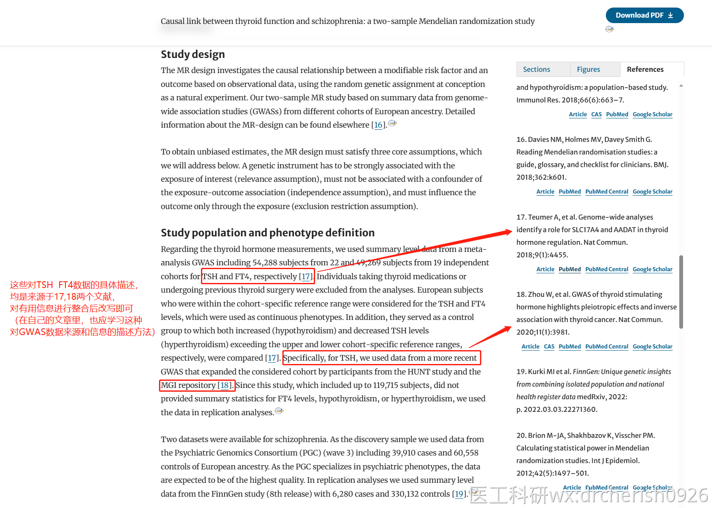</a></figure></p><p><strong><span>2.首先查找第一个数据，点击参考文献17：Genome-wide analyses identify a role for SLC17A4 and AADAT in thyroid hormone regulation（doi: 10.1038/s41467-018-06356-1. ）</span></strong></p><p><figure class="image-card"><a href="../assets/media/1d1ff4c5ad6c239a53b2.png">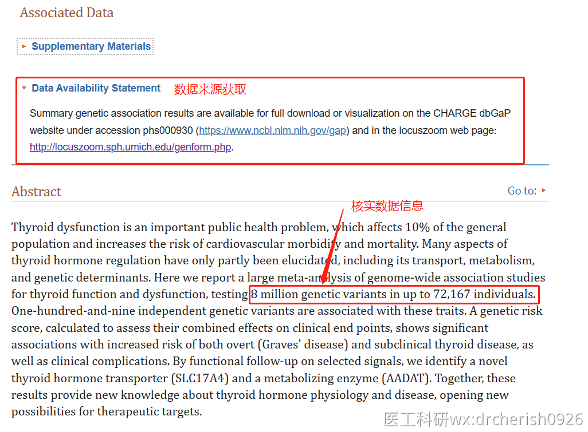</a></figure></p><p><span>然后从上面的链接进去NCBI网页，找到000930的数据，但是无法获取该数据</span></p><p><figure class="image-card"><a href="../assets/media/f98d169b1295c37c4351.png">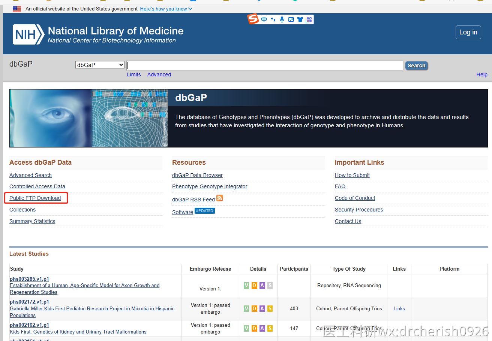</a></figure></p><p><figure class="image-card"><a href="../assets/media/e259b9515f06f3d57598.png">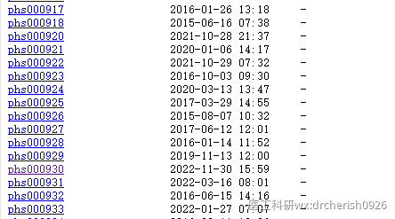</a></figure><figure class="image-card"><a href="../assets/media/828bc4c207f0cb3f145d.png">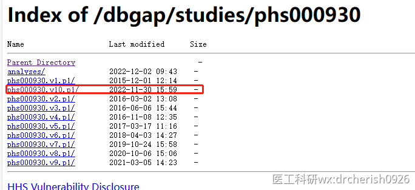</a></figure><figure class="image-card"><a href="../assets/media/0cf6cf25fcf17e975b3d.png">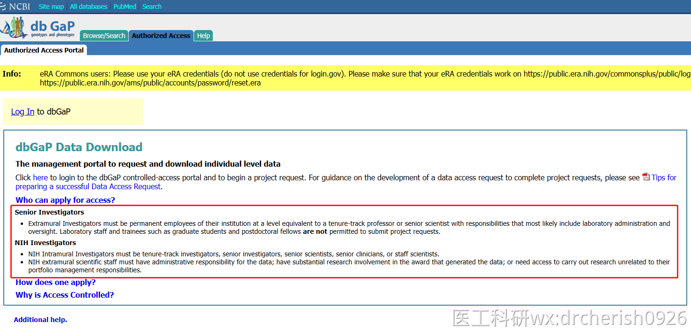</a></figure></p><p><span>由于本地址无法获取，故考虑值GWAS Catalog寻找，搜索关键词后发现确实能找到（这是第二个方案）</span></p><p><figure class="image-card"><a href="../assets/media/54022794c89a542dc55d.png">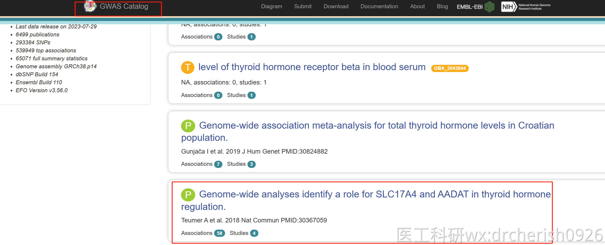</a></figure></p><p><figure class="image-card"><a href="../assets/media/7e91f6dcd9742c366675.png">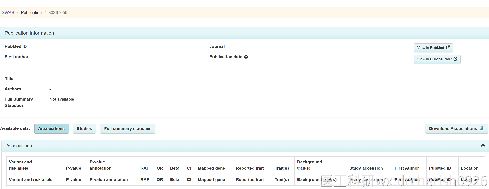</a></figure></p><p><span>但是点进去后仍然无法下载，故这一数据的获取只能放弃，或换其他的数据来源。。。</span></p><p><br></p><p><span>再次寻找甲状腺功能的数据，发现有甲状腺专门的网站（第三个方案）</span><span>，</span><a href="https://transfer.sysepi.medizin.uni-greifswald.de/thyroidomics/datasets-new/" target="_blank" rel="noreferrer"><span>https://transfer.sysepi.medizin.uni-greifswald.de/thyroidomics/datasets-new/</span></a></p><p><figure class="image-card"><a href="../assets/media/0cd23914d7fbcae26b79.png">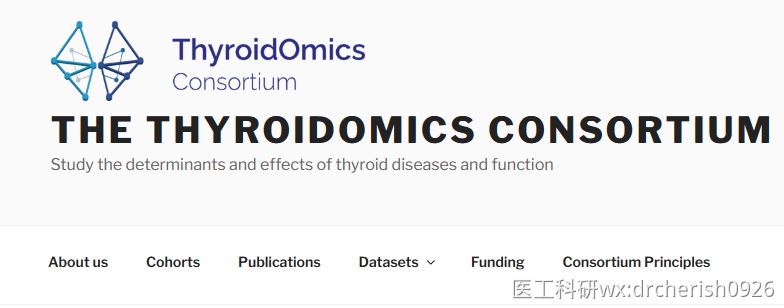</a></figure><figure class="image-card"><a href="../assets/media/7d3980c936aaa645ce4d.png">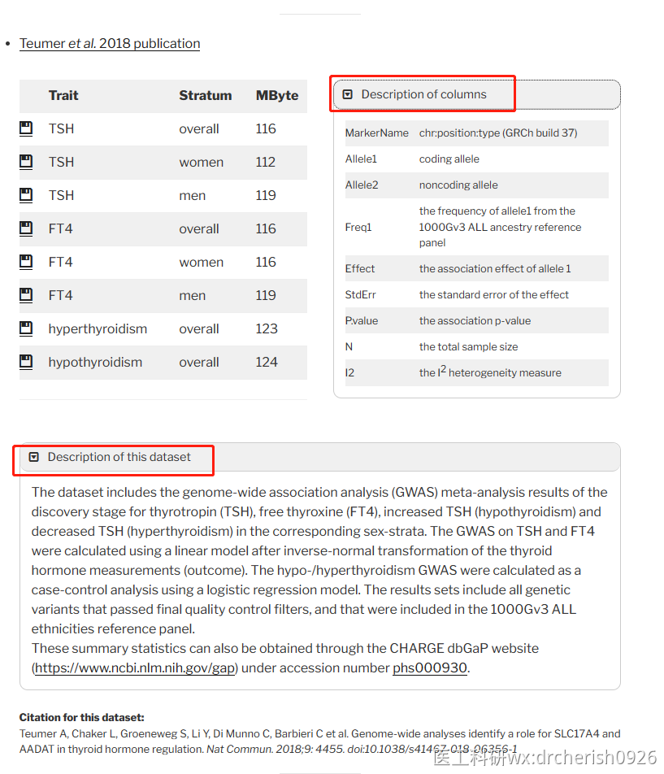</a></figure></p><p><span>在这个网页端就找到对应的数据了，并且男女进行了分层，点击即可进行下载，根据描述文件修改列名即可</span></p><p><span>​</span><br></p><p><br></p><p><strong><span>3.其次查找第二个数据，查看参考文献18  GWAS of thyroid stimulating hormone highlights pleiotropic effects and inverse association with thyroid cancer</span></strong></p><p><span>直接查看数据获取说明，即可看到汇总数据可以在下面的链接中获得</span></p><p><figure class="image-card"><a href="../assets/media/e190f1f920f722684185.png">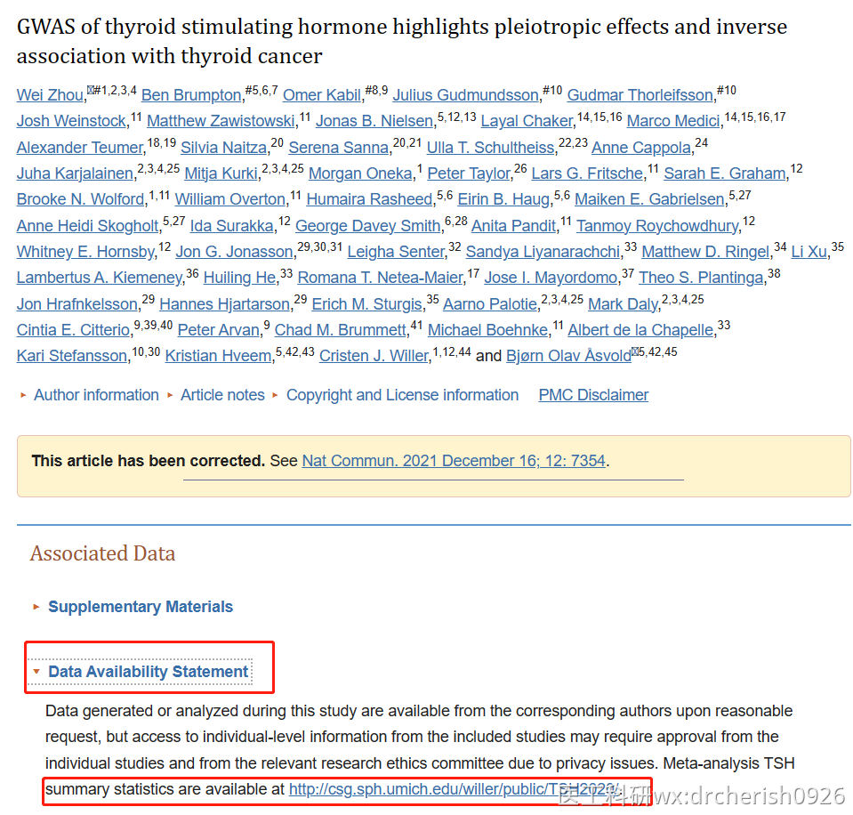</a></figure></p><p><figure class="image-card"><a href="../assets/media/c846b94dd38a6506f031.png">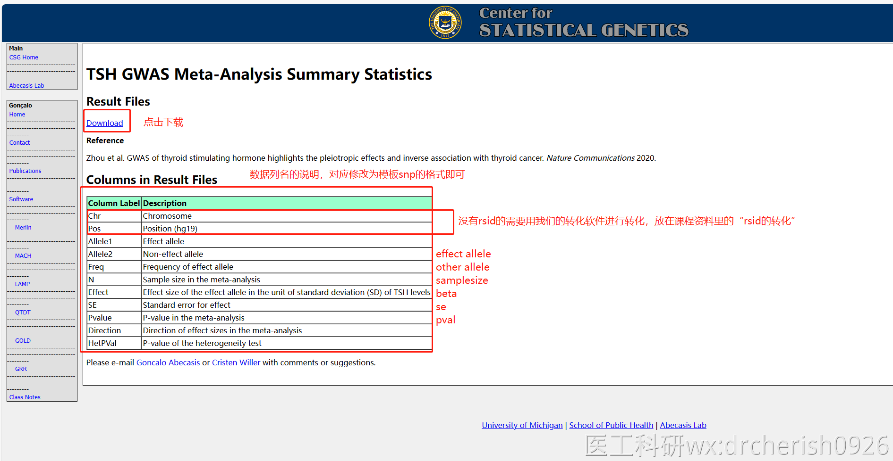</a></figure></p><p><span>点击下载链接后是这样，然后选择这个下载链接，复制到迅雷进行下载（1.81G）</span></p><p><span>然后用emeditor打开，修改列名，并进行rsid的转化</span></p><p><figure class="image-card"><a href="../assets/media/910bb9cba9c722fd4fb4.png">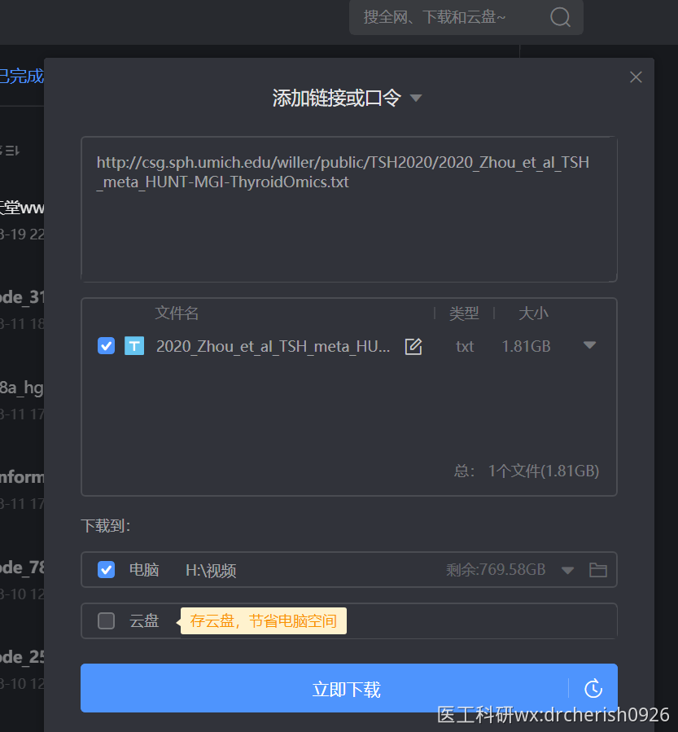</a></figure></p><p><figure class="image-card"><a href="../assets/media/f0ab762f1a8a7d88dcad.png">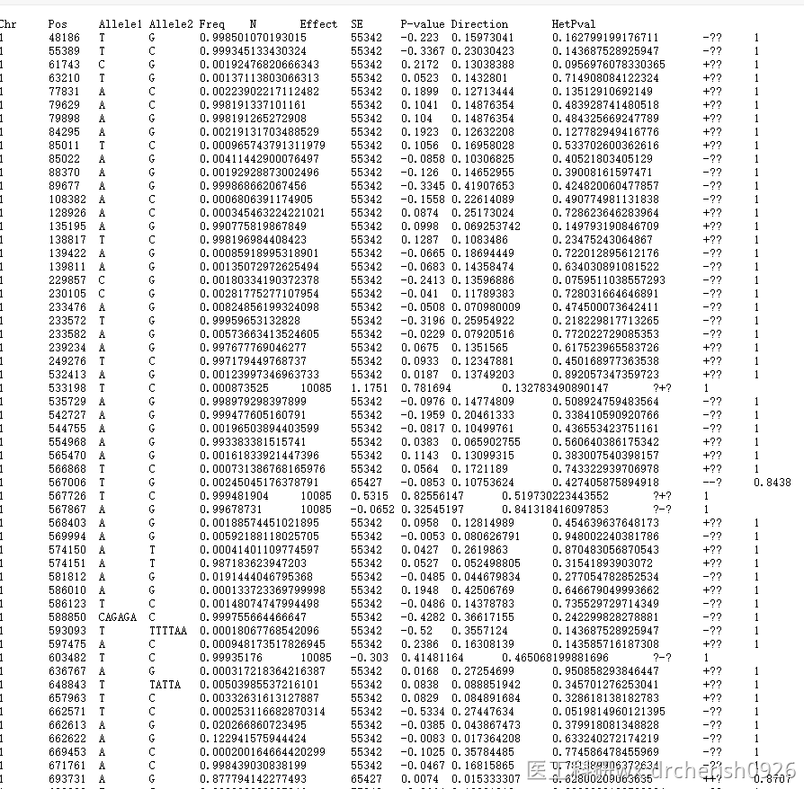</a></figure></p><p><br></p><h1><span>详细例子2</span></h1><p><span>从Amyloid, tau and risk of Alzheimer’s disease: a Mendelian </span></p><p><span>randomization study文献中寻找GWAS数据——（DOI: 10.1007/s10654-020-00683-8 ）</span></p><p><figure class="image-card"><a href="../assets/media/bdf4595a4afe97912aab.png">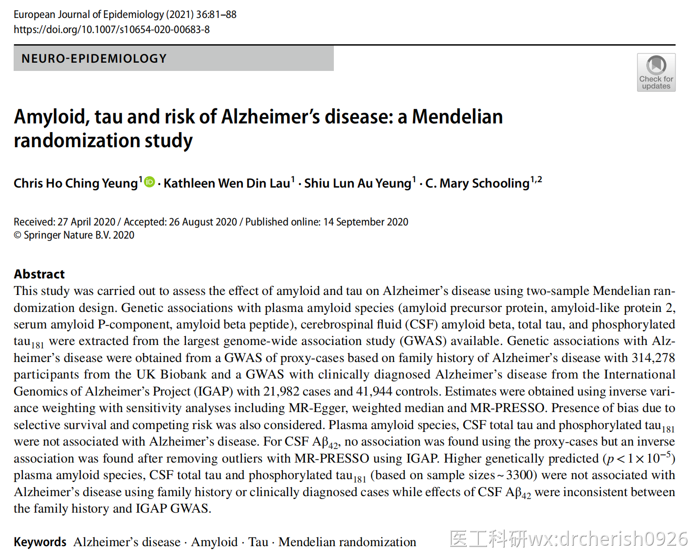</a></figure></p><p><figure class="image-card"><a href="../assets/media/96bef8613379edcf344e.png">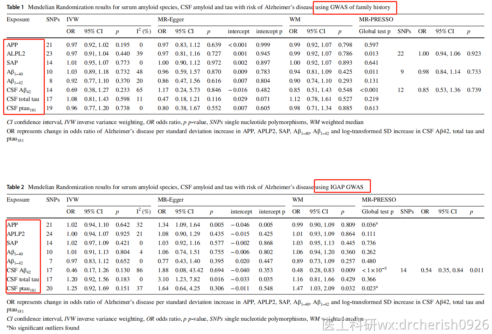</a></figure></p><p><span>其中使用到的8个工具变量：</span><span>plasma amyloid species (amyloid precursor protein, amyloid-like protein 2, serum amyloid P-component, amyloid beta peptide）</span></p><p><span>2个AD的数据集</span></p><p><span>​</span><br></p><ol><li><span>直接查看原文研究设计这里对工具变量的描述，可知数据分别来源于12,13,14文献</span></li></ol><p><span>​</span><br></p><p><figure class="image-card"><a href="../assets/media/08c4b4ce7ade756ad86c.png">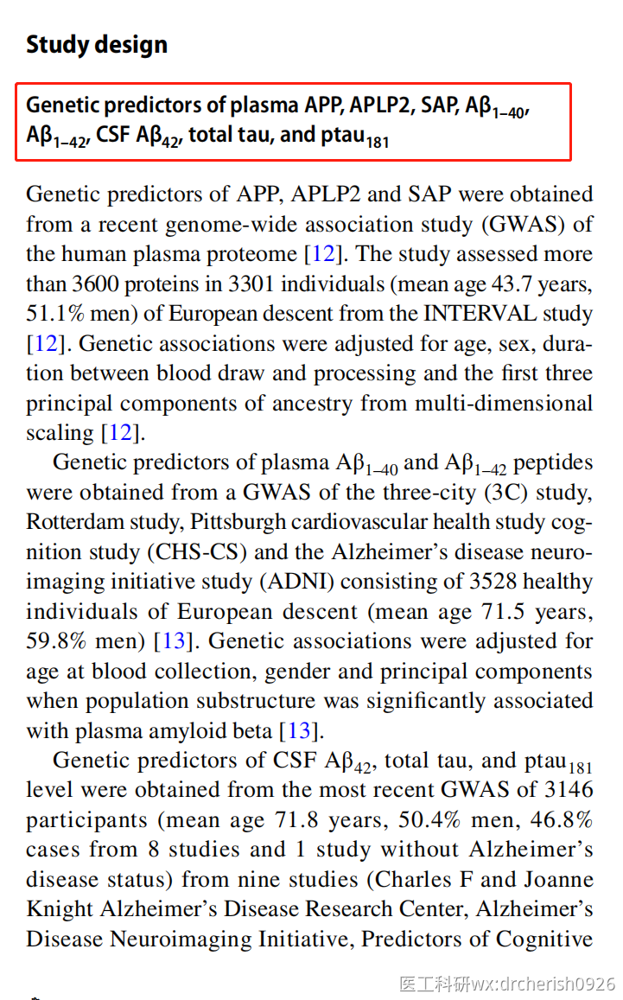</a></figure><figure class="image-card"><a href="../assets/media/ea2998a671df425db2bf.png">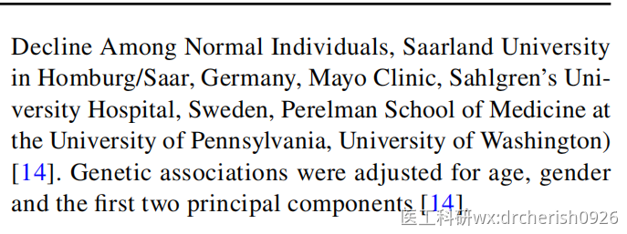</a></figure></p><p><span>（1）</span><span>APP, APLP2 and SAP were obtained from a recent genome-wide association study (GWAS) of the human plasma proteome [12]. </span></p><p><span>下载参考文献12，查看其数据来源于哪里，参考文献12下载后根据文字的描述无法找到其下载地址</span></p><p><span>在其附件材料内也无法找到</span></p><p><figure class="image-card"><a href="../assets/media/02efeb161f22b0e21063.png">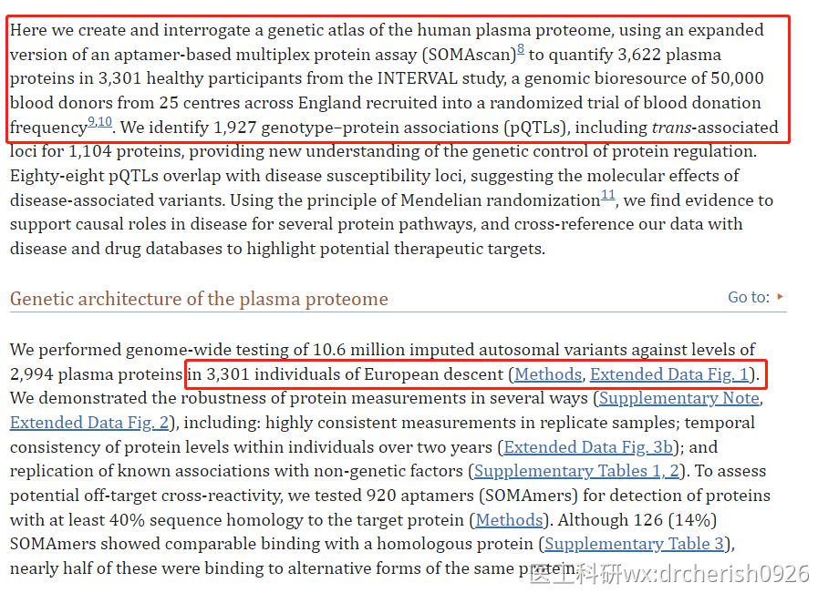</a></figure></p><p><span>在GWAS Catalog也找不到数据</span></p><p><figure class="image-card"><a href="../assets/media/c8940b983a52c46a40cc.png">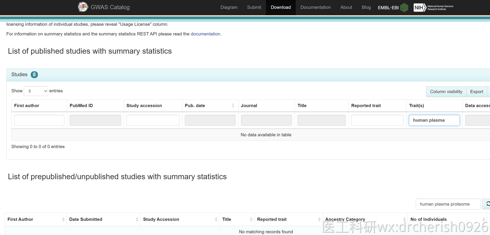</a></figure></p><p><span>然后再次阅读原文，在数据获取这里看到了下载链接</span></p><p><span> Summary association results are also publically available at http://www.phpc.cam.ac.uk/ceu/proteins/, through PhenoScanner (http:// www.phenoscanner.medschl.cam.ac.uk) and from the NHGRI-EBI GWAS Catalog (https://www.ebi.ac.uk/gwas/downloads/summarystatistics)  </span></p><p><figure class="image-card"><a href="../assets/media/5d0eca9ff65c5612ea19.png">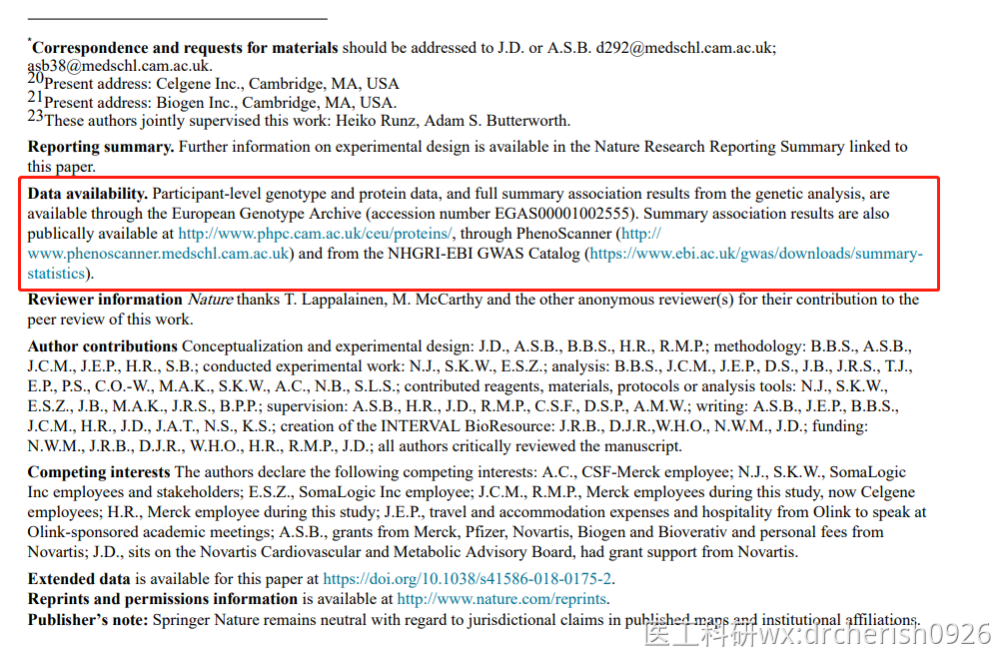</a></figure></p><p><span>根据第一个链接点进去：</span><a href="http://www.phpc.cam.ac.uk/ceu/proteins/" target="_blank" rel="noreferrer"><span>http://www.phpc.cam.ac.uk/ceu/proteins/</span></a></p><p><figure class="image-card"><a href="../assets/media/4fb238535335bcb65498.png">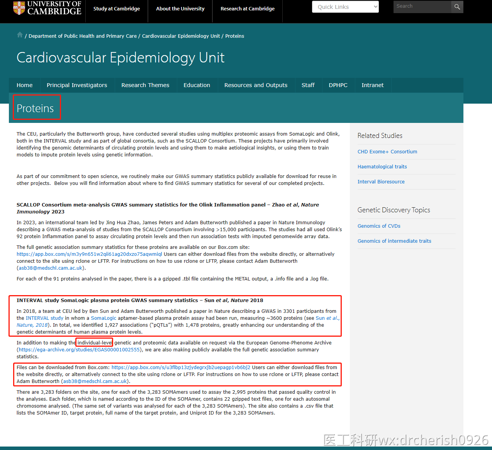</a></figure></p><p><figure class="image-card"><a href="../assets/media/13919498069b016ca014.png">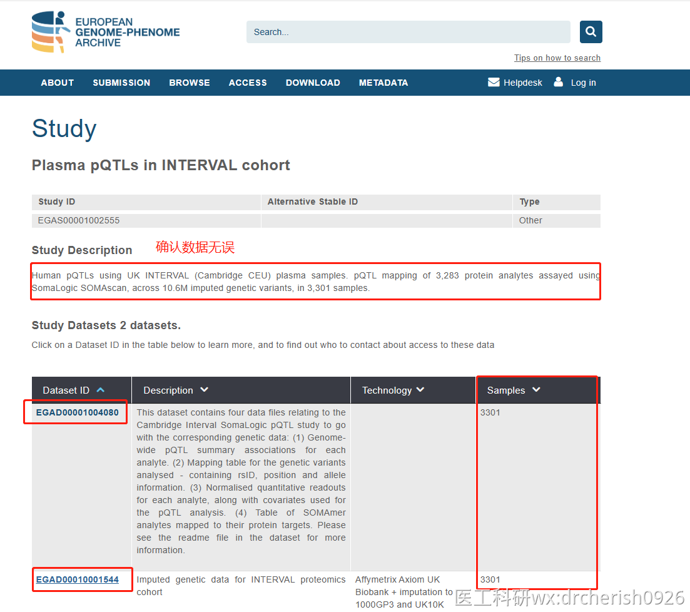</a></figure></p><p><br></p><p><span>根据网站的下载提示</span><a href="https://ega-archive.org/access/data-access" target="_blank" rel="noreferrer"><span>https://ega-archive.org/access/data-access</span></a><span>，按流程，联系邮箱进行申请数据的下载使用即可</span></p><p><figure class="image-card"><a href="../assets/media/b7a569187a8749f8c230.png">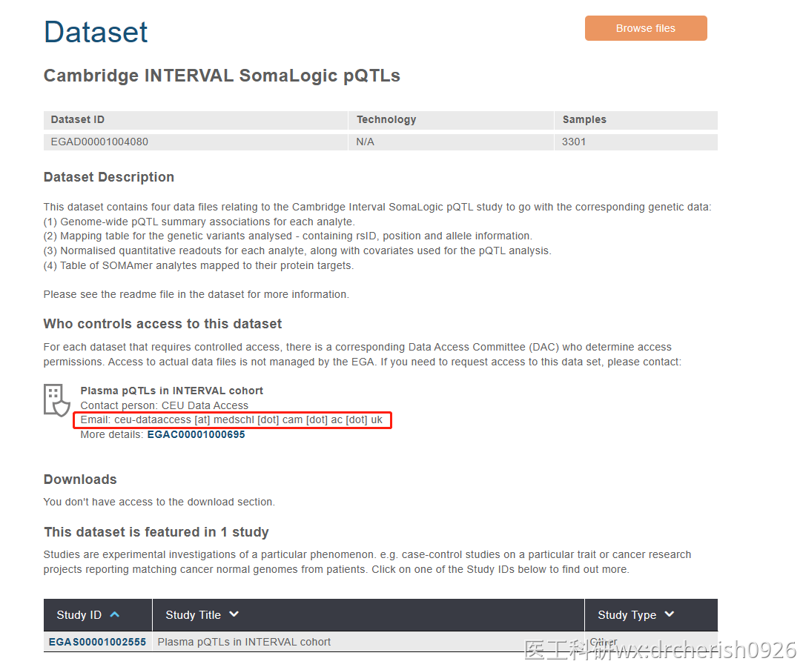</a></figure></p><p><span>（2）</span><span>Aβ1–40 and Aβ1–42 的数据来源</span></p><p><span>Genetic predictors of plasma Aβ1–40 and Aβ1–42 peptides were obtained from a GWAS of the three-city (3C) study, Rotterdam study, Pittsburgh cardiovascular health study cognition study (CHS-CS) and the Alzheimer’s disease neuroimaging initiative study (ADNI) consisting of 3528 healthy individuals of European descent (mean age 71.5 years, 59.8% men) [</span><span>13</span><span>]</span></p><p><span>​</span><br></p><p><figure class="image-card"><a href="../assets/media/404c3659901cd43008fb.png">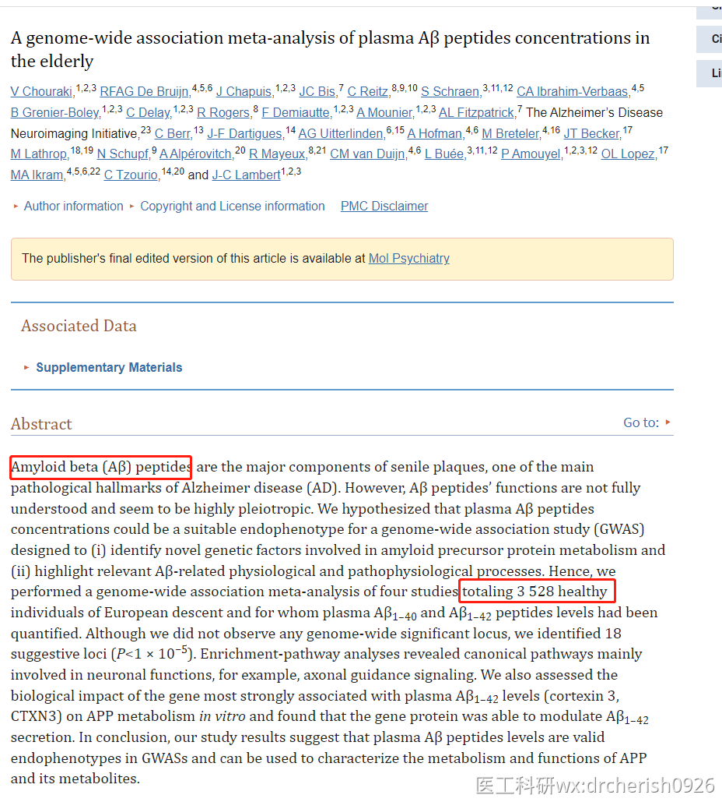</a></figure></p><p><span>下载参考文献13，确认信息无误，查看其数据来源表1，将其复制粘贴出来，整理为模板snp的格式即可</span></p><p><figure class="image-card"><a href="../assets/media/2849d7a8b3053110d27a.png">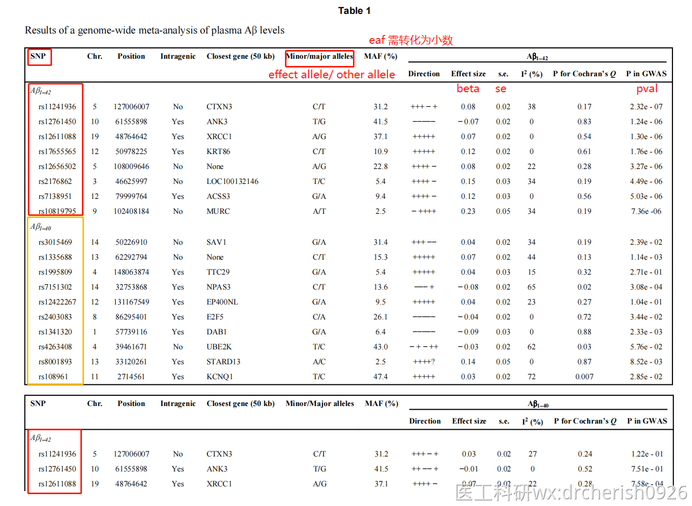</a></figure></p><p><span>（3）</span><span>CSF Aβ42, total tau, and ptau181的来源</span></p><p><span>Genetic predictors of CSF Aβ42, total tau, and ptau181 level were obtained from the most recent GWAS of 3146  participants【14】</span></p><p><span>直接在参考文献14的附件2里面找到对应3个数据的GWAS数据，是小于1*10-5</span></p><p><figure class="image-card"><a href="../assets/media/9760b81b72d431781e39.png">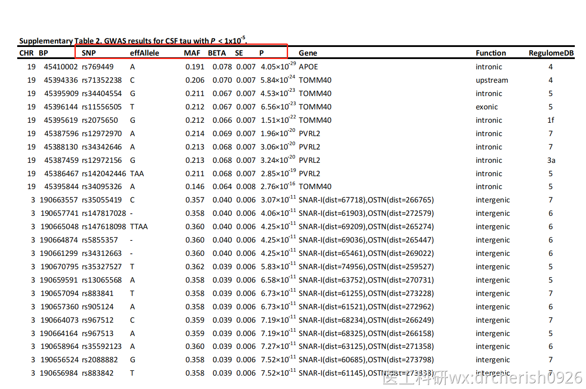</a></figure></p><p><br></p><p><span>到此为止，已找到所有使用的暴露的GWAS数据，具体数据的描述可以参考原文的内容进行适当改写即可使用！！！</span><figure class="image-card"><a href="../assets/media/8b4a1d5303b319c60189.png">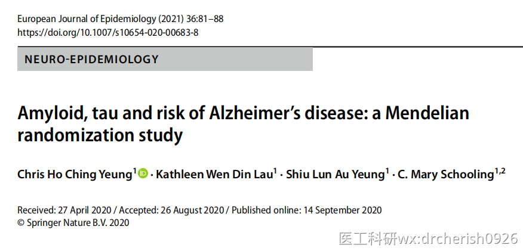</a></figure></p><p><span>​</span><br></p><p><strong><span>结局的数据很简单，是2个AD的数据，其描述介绍如下</span></strong></p><p><strong><span>引用文献是16-17，这些都可以仿写</span></strong></p><p><figure class="image-card"><a href="../assets/media/1023a257f774c218f790.png">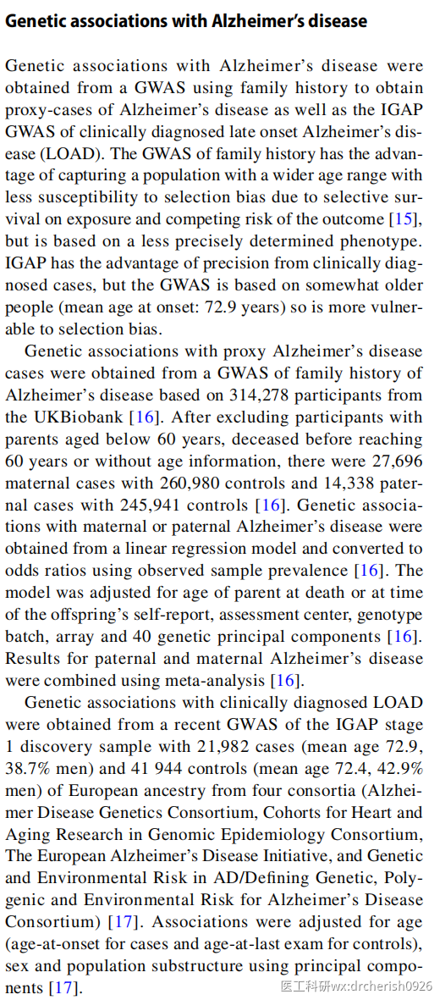</a></figure></p><p><span>结局的下载方法在文献末尾有</span></p><p><span>（1）数据集1</span></p><p><span>Data on </span><strong><span>family history Alzheimer’s disease </span></strong><span>summary statistics have been contributed by Centre for Cognitive Ageing and Cognitive Epidemiology at the University of Edinburgh and have been downloaded from </span><span>http://www.ccace.ed. ac.uk/about-us</span><span>. Data on age at recruitment have been contributed by UK Biobank Ben Neale fles and have been downloaded from </span></p><p><span>http:// www.nealelab.is/uk-biobank</span></p><p><figure class="image-card"><a href="../assets/media/98b0f67ae043fd78c37b.png">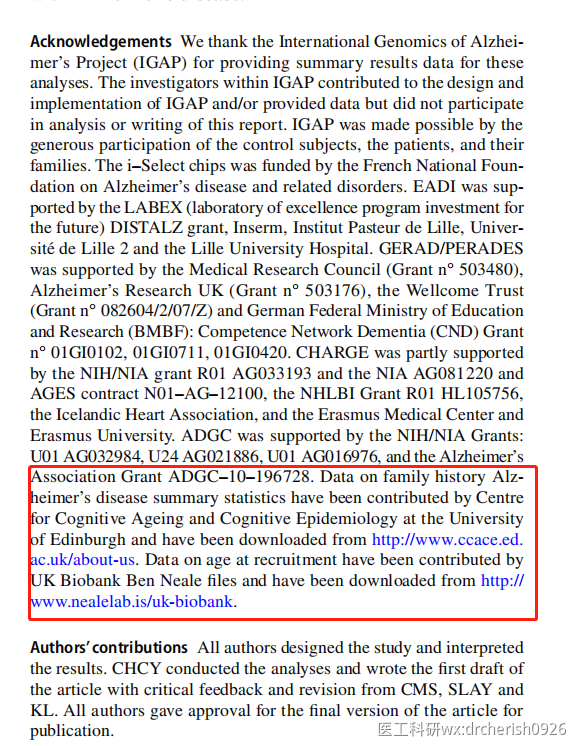</a></figure></p><p><span>（2）</span><span>数据集2</span></p><p><span>Genetic associations with clinically diagnosed LOAD were obtained from a recent GWAS of the IGAP stage 1 discovery sample with 21,982 cases (mean age 72.9, 38.7% men) and 41 944 controls (mean age 72.4, 42.9% men) of European ancestry from four consortia 【17】——</span></p><p><span>17. Kunkle BW, Grenier-Boley B, Sims R, et al. Genetic meta-analysis of diagnosed Alzheimer’s disease identifes new risk loci and implicates Aβ, tau, immunity and lipid processing. Nat Genet. 2019;51(3):414–30. </span><span>https://doi.org/10.1038/s4158 8-019-0358-2</span></p><p><figure class="image-card"><a href="../assets/media/0e031d46efc3f7da81a0.png">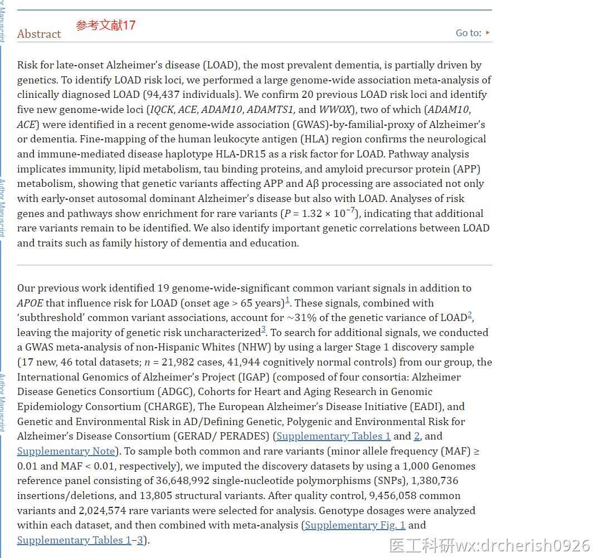</a></figure><figure class="image-card"><a href="../assets/media/69cf05083fb7e76a7d75.png">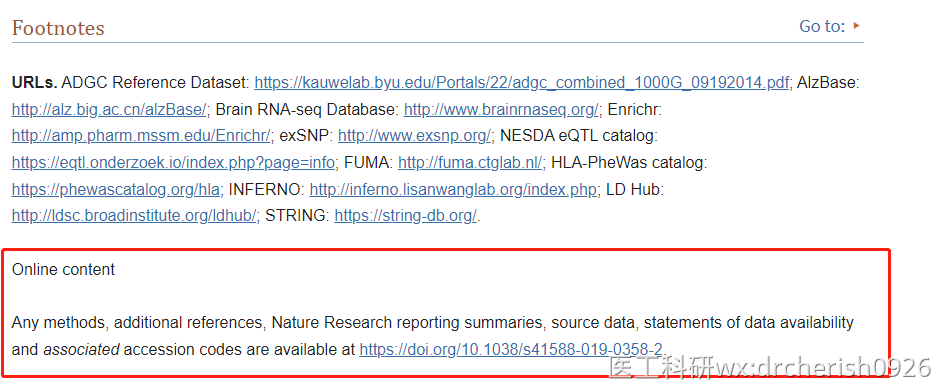</a></figure></p><p><span>Online content</span></p><p><span>Any methods, additional references, Nature Research reporting summaries, source data, statements of data availability and </span><em><span>associated</span></em><span> accession codes are available at </span><a href="https://doi.org/10.1038/s41588-019-0358-2" target="_blank" rel="noreferrer"><span>https://doi.org/10.1038/s41588-019-0358-2</span></a><span>.</span></p><p><br></p><p><span>此外在GWAS Catalog 也有一些AD的数据，可以查看和下载</span></p><p><figure class="image-card"><a href="../assets/media/0ad8efc45b21bf76a58f.png">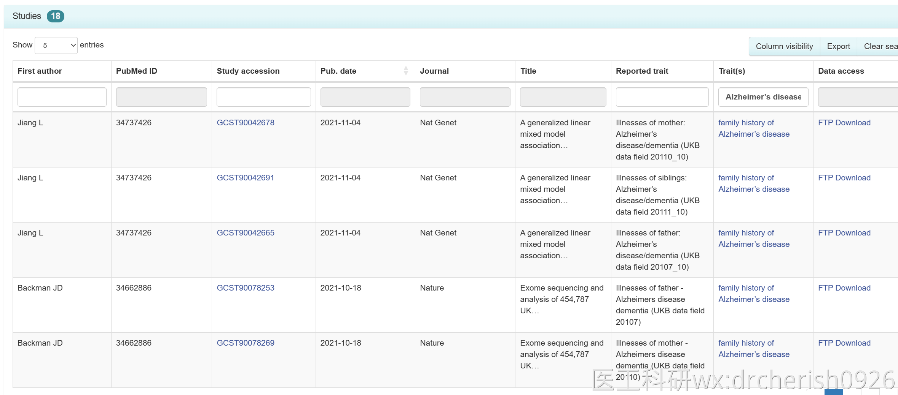</a></figure></p><p><figure class="image-card"><a href="../assets/media/b97a6197622289ba6272.png">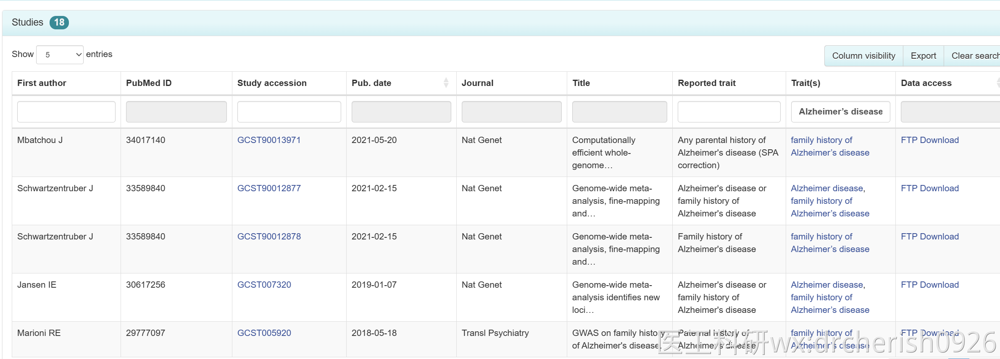</a></figure></p></div>
  </article>
  <div class="doc-nav"><a class="nav-card" href="ybcs9e0g7kqzwi75.html"><em>上一篇</em><strong>09.样本重叠率的相关问题</strong></a><a class="nav-card" href="cfrt522wqa7k9v56.html"><em>下一篇</em><strong>11.pval -log10转换注意</strong></a></div>
</main>
    </div>
    <section class="footer-note">
  <p><strong>引用：</strong>医工科研-孟德尔随机化</p>
  <small>该页面依据授权整理为站内阅读版，保留原手册内容结构、链接关系与代码示例，便于持续分享和检索。</small>
</section>
  </div>
  <script src="../assets/site.js"></script>
</body>
</html>